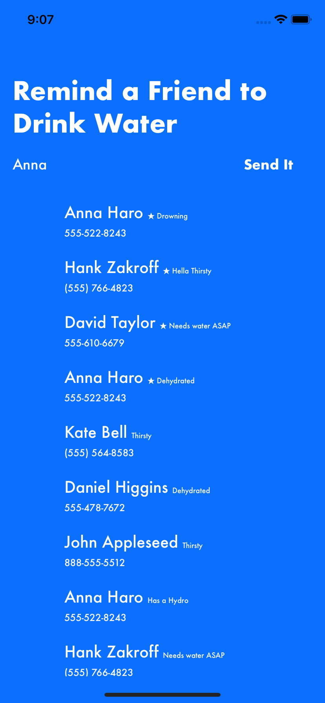

This is Drink Water! An iOS app that makes remembering to drink water social. Drink Water is a simple app that lets users notify their friends to drink water. This app leverages firebase to send push notifications and texts. I made this app with another intern at Yahoo Fantasy Sports, David Ho. This was a moonlight project for us.
Repo →